What an Interface Can Do
Utah Gophers
4 November 2014
Thom Boyer
Dish Digital
This talk is online at
thomboyer.com/Go-Interfaces.
The sources are available on
github at
perlmonger42 / Go-Interfaces-Talk.
Interfaces Are Cool
“Go's interfaces—static, checked at compile time, dynamic when asked for—are, for me, the most exciting part of Go from a language design point of view. If I could export one feature of Go into other languages, it would be interfaces. ”
— Russ Cox
Safe Duck Typing
“Go's interfaces let you use duck typing like you would in a purely dynamic language like Python but still have the compiler catch obvious mistakes like passing an int where an object with a Read method was expected, or like calling the Read method with the wrong number of arguments.”
— Russ Cox
Example Interfaces
To demonstrate the power of interfaces, we'll mostly be playing
with the Image interface. But first let's touch on
some of the supporting types:
image.Pointimage.Rectanglecolor.Colorcolor.Model
image.Point and image.Rectangle
// An X, Y coordinate pair. The axes increase right and down.
type Point struct {
X, Y int
}
// A Rectangle contains the points with Min.X <= X < Max.X,
// Min.Y <= Y < Max.Y. It is well-formed if Min.X <= Max.X
// and likewise for Y. Points are always well-formed. A
// rectangle's methods always return well-formed outputs for
// well-formed inputs.
type Rectangle struct {
Min, Max Point
}
color.Color and color.Model
// Color can convert itself to alpha-premultiplied 16-bits
// per channel RGBA. The conversion may be lossy.
type Color interface {
// RGBA returns the alpha-premultiplied red, green, blue and
// alpha values for the color. Each value ranges within [0, 0xFFFF],
// but is represented by a uint32 so that multiplying by a
// blend factor up to 0xFFFF will not overflow.
RGBA() (r, g, b, a uint32)
}
// Model can convert any Color to one from its own color model.
// The conversion may be lossy.
type Model interface {
Convert(c Color) Color
}
image.Image
type Image interface {
// ColorModel returns the Image's color model.
ColorModel() color.Model
// Bounds returns the domain for which At can return
// non-zero color. The bounds do not necessarily contain
// the point (0, 0).
Bounds() Rectangle
// At returns the color of the pixel at (x, y).
// At(Bounds().Min.X, Bounds().Min.Y) returns the
// upper-left pixel of the grid.
// At(Bounds().Max.X-1, Bounds().Max.Y-1) returns the
// lower-right one.
At(x, y int) color.Color
}
What an Image Is Not
Package image provides image.RGBA,
a concrete type that implements image.Image.
It contains a slice of bytes (Pix
[]uint8) that encodes the red, green, blue, and
alpha components of each pixel the image contains.
But — as you can tell from the interface definition —
an Image does not have to contain pixel
storage. As long as its At() method
can tell what color each pixel is, that is
sufficient.
Creating an Empty Picture
Here is a simple program that creates a blank image and writes it to a file in PNG format.
package main
import ("image"; "image/png"; "log"; "os")
func main() {
size := image.Point{850, 400}
m := image.NewRGBA(image.Rectangle{image.ZP, size})
outFilename := "transparent.png"
outFile, err := os.Create(outFilename)
if err != nil {
log.Fatal(err)
}
defer outFile.Close()
log.Print("Saving image to: ", outFilename)
png.Encode(outFile, m)
}
transparent.png
And here's the resulting image:
The Simplest Image Possible
package main
import ("image"; "image/png"; "image/color"; "log"; "os")
func main() {
outFilename, m := makeSampleImage()
outFile, err := os.Create(outFilename)
if err != nil {
log.Fatal(err)
}
defer outFile.Close()
log.Print("Saving image to: ", outFilename)
png.Encode(outFile, m)
}
func makeSampleImage() (string, image.Image) {
return "rectangle.png", Rectangle{}
}
type Rectangle struct { }
func (shape Rectangle) ColorModel() color.Model {
return color.RGBAModel
}
func (shape Rectangle) Bounds() image.Rectangle {
return image.Rect(0, 0, 850, 400)
}
func (shape Rectangle) At(x, y int) color.Color {
return color.RGBA{0, 0, 255, 255} // blue
}
rectangle.png
And here's the resulting image:
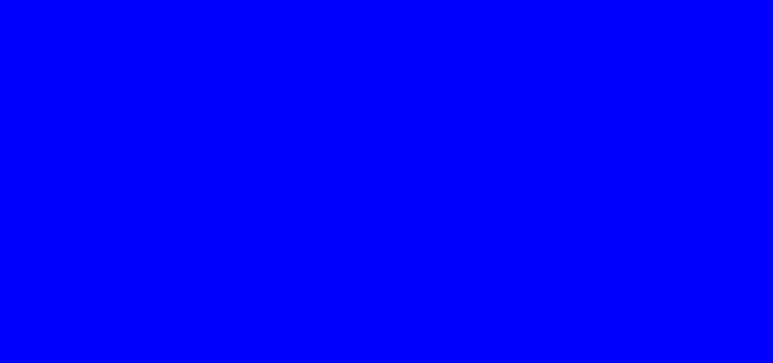The Simplest Geometric Shape Possible
func makeSampleImage() (string, image.Image) {
hotpink := color.RGBA{255, 25, 155, 255}
return "circle.png", Circle{Radius: 200, Color: hotpink}
}
type Circle struct {
Radius int
Color color.Color
}
func (shape Circle) Bounds() image.Rectangle {
r := shape.Radius
return image.Rect(-r, -r, r, r)
}
func (shape Circle) At(x, y int) color.Color {
r := shape.Radius
if x*x + y*y < r*r {
return shape.Color
}
return color.RGBA{0, 0, 0, 0}
}
circle.png
And here's the resulting image:
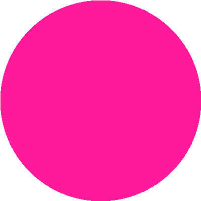Nested Circles
func makeSampleImage() (string, image.Image) {
return "colorings.png", ColorRings{Radius: 200}
}
type ColorRings struct {
Radius int
}
func (shape ColorRings) Bounds() image.Rectangle {
r := shape.Radius
return image.Rect(-r, -r, r, r)
}
func (shape ColorRings) At(x, y int) color.Color {
distance := int(math.Hypot(float64(x), float64(y)))
return RainbowColor(distance * 6 / shape.Radius)
}
func RainbowColor(n int) color.Color {
switch n {
case 0: return color.RGBA{0xFF, 0x00, 0x00, 255} // Red
case 1: return color.RGBA{0xFF, 0xA5, 0x00, 255} // Orange
case 2: return color.RGBA{0xFF, 0xFF, 0x00, 255} // Yellow
case 3: return color.RGBA{0x3C, 0xB3, 0x71, 255} // Medium Sea Green
case 4: return color.RGBA{0x1E, 0x90, 0xFF, 255} // Dodger Blue
case 5: return color.RGBA{0x93, 0x70, 0xDB, 255} // Medium Purple
}
return color.RGBA{0, 0, 0, 0}
}
colorings.png
And here's the resulting image:
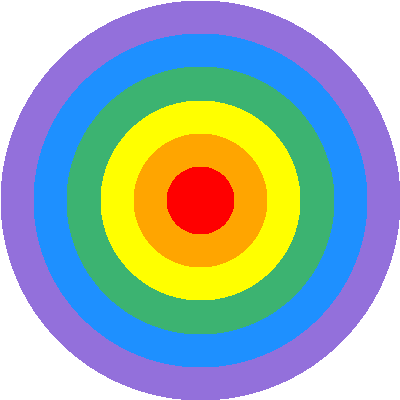Blur
func makeSampleImage() (string, image.Image) {
return "blur.png", Blur{
Image: ColorRings{Radius: 200},
BlurRadius: 8,
}
}
type Blur struct {
Image image.Image
BlurRadius int
}
func (shape Blur) Bounds() image.Rectangle {
return shape.Image.Bounds()
}
func (shape Blur) At(x, y int) color.Color {
var sumWeight, sumR, sumG, sumB float64
radius := float64(shape.BlurRadius)
for i := x - shape.BlurRadius; i < x+shape.BlurRadius+1; i++ {
for j := y - shape.BlurRadius; j < y+shape.BlurRadius+1; j++ {
dist := math.Hypot(float64(i-x), float64(j-y))
if dist <= radius {
weight := 1 / (1 + dist)
r, g, b, _ := shape.Image.At(i, j).RGBA()
sumR += float64(r) * weight
sumG += float64(g) * weight
sumB += float64(b) * weight
sumWeight += weight
}
}
}
_, _, _, a := shape.Image.At(x, y).RGBA()
return color.RGBA{
uint8(sumR / sumWeight * (255.0 / 65535)),
uint8(sumG / sumWeight * (255.0 / 65535)),
uint8(sumB / sumWeight * (255.0 / 65535)),
uint8(a * 255 / 65535),
}
}
type ColorRings struct {
Radius int
}
func (shape ColorRings) ColorModel() color.Model {
return color.RGBAModel
}
func (shape ColorRings) Bounds() image.Rectangle {
r := shape.Radius
return image.Rect(-r, -r, r, r)
}
func (shape ColorRings) At(x, y int) color.Color {
distance := int(math.Hypot(float64(x), float64(y)))
return RainbowColor(distance * 6 / shape.Radius)
}
func RainbowColor(n int) color.Color {
switch n {
case 0: return color.RGBA{0xFF, 0x00, 0x00, 255} // Red
case 1: return color.RGBA{0xFF, 0xA5, 0x00, 255} // Orange
case 2: return color.RGBA{0xFF, 0xFF, 0x00, 255} // Yellow
case 3: return color.RGBA{0x3C, 0xB3, 0x71, 255} // Medium Sea Green
case 4: return color.RGBA{0x1E, 0x90, 0xFF, 255} // Dodger Blue
case 5: return color.RGBA{0x93, 0x70, 0xDB, 255} // Medium Purple
}
return color.RGBA{0, 0, 0, 0}
}
blur.png
And here's the resulting image:
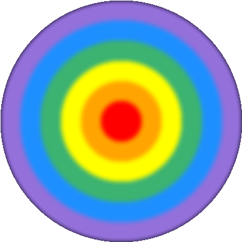Trigonometry: red=sin(x), green=cos(y)
func makeSampleImage() (string, image.Image) {
return "gingham.png", Gingham{image.Point{850, 400}}
}
type Gingham struct {
Size image.Point
}
func (shape Gingham) At(x, y int) color.Color {
sinx := math.Sin(float64(x)/25.0)
cosy := math.Cos(float64(y)/25.0)
return color.RGBA{
uint8(math.Abs(sinx) * 255),
uint8(math.Abs(cosy) * 255),
128,
255,
}
}
gingham.png
And here's the resulting image:
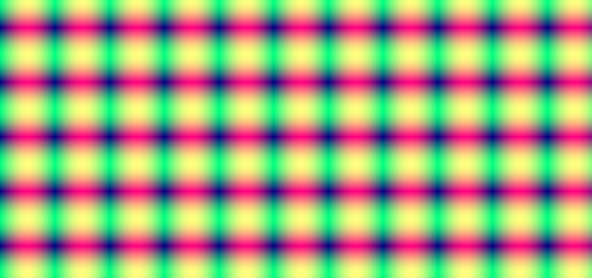Sierpinski Carpet
Take a square carpet, divide it into nine smaller squares, and remove the middle square. Recur on the remaining squares.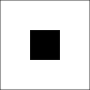 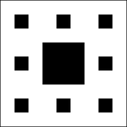
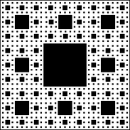 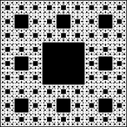
Sierpinski Carpet
func makeSampleImage() (string, image.Image) {
return "sierpinski.png", SierpinskiCarpet{}
}
type SierpinskiCarpet struct { }
func (shape SierpinskiCarpet) Bounds() image.Rectangle {
return image.Rect(0, 0, 850, 400)
}
func (shape SierpinskiCarpet) At(x, y int) color.Color {
for ; x > 0 || y > 0; x, y = x/3, y/3 {
if x%3 == 1 && y%3 == 1 {
return color.RGBA{0, 0, 0, 0}
}
}
return color.RGBA{0,55,255,255};
}
sierpinski.png
And here's the resulting image:
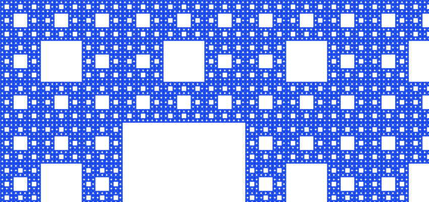Mandelbrot Set
func makeSampleImage() (string, image.Image) {
return "mandelbrot.png", Mandelbrot{
Size: image.Point{700, 400},
Cx: -1,
Cy: -0.285,
Zoom: 120,
}
}
type Mandelbrot struct {
Size image.Point
Cx float64
Cy float64
Zoom float64
}
func (shape Mandelbrot) At(xi, yi int) color.Color {
x0 := float64(xi-shape.Size.X/2)/(shape.Zoom*100) + shape.Cx
y0 := float64(yi-shape.Size.Y/2)/(shape.Zoom*100) + shape.Cy
x, y := x0, y0
xx, yy := x*x, y*y
iteration := 0
max_iterations := 1000
for xx+yy < 4 && iteration < max_iterations {
x, y = xx-yy+x0, 2*x*y+y0
xx, yy = x*x, y*y
iteration += 1
}
return ThousandColors(iteration)
}
func RainbowColor(n int) color.Color {
switch n {
case 0: return color.RGBA{0xFF, 0x00, 0x00, 255} // Red
case 1: return color.RGBA{0xFF, 0xA5, 0x00, 255} // Orange
case 2: return color.RGBA{0xFF, 0xFF, 0x00, 255} // Yellow
case 3: return color.RGBA{0x3C, 0xB3, 0x71, 255} // Medium Sea Green
case 4: return color.RGBA{0x1E, 0x90, 0xFF, 255} // Dodger Blue
case 5: return color.RGBA{0x93, 0x70, 0xDB, 255} // Medium Purple
}
return color.RGBA{0, 0, 0, 0}
}
func ThousandColors(n int) color.Color {
// Interpolate a thousand colors between yellow and purple.
if n < 0 || n >= 1000 {
return color.RGBA{0, 0, 0, 0}
}
const W = 250 // band width: number of values to map between 2 adjacent colors
i := n / W // convert 0..999 to 0..3
c1 := RainbowColor(i + 2)
c2 := RainbowColor(i + 3)
// interpolate between c1 and c2
d := uint32(n % W) // d is 0..W-1, the relative distance between c1 & c2
d2 := (W - 1) - d // d2 is W-1..0, the relative distance between c2 & c1
r1, g1, b1, a1 := c1.RGBA()
r2, g2, b2, a2 := c2.RGBA()
r := ((r1*d2 + r2*d) / W) * 255 / 65535
g := ((g1*d2 + g2*d) / W) * 255 / 65535
b := ((b1*d2 + b2*d) / W) * 255 / 65535
a := ((a1*d2 + a2*d) / W) * 255 / 65535
return color.RGBA{uint8(r), uint8(g), uint8(b), uint8(a)}
}
mandelbrot.png
And here's the resulting image:
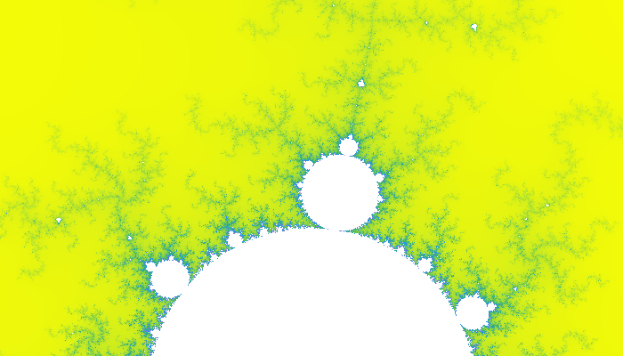The Big Picture
We can also create an Image by composing
smaller Images.
func makeSampleImage() (string, image.Image) {
circle := Circle{Radius: 100, Color: RainbowColor(3)}
mandelbrot := Mandelbrot{
Size: image.Point{350, 200},
Cx: -0.75,
Cy: -0.0,
Zoom: 1,
}
gingham := Gingham{Size: image.Point{175, 175}}
composedImage := hcAppend(circle, mandelbrot, gingham)
return "composite.png", composedImage
}
type Composite struct {
images []image.Image
bounds []image.Rectangle
}
func (shape Composite) Bounds() image.Rectangle {
if len(shape.images) == 0 {
return image.Rect(0, 0, 0, 0)
}
bounds := shape.bounds[0]
for _, b := range shape.bounds {
bounds = bounds.Union(b)
}
return bounds
}
func (shape Composite) At(x, y int) color.Color {
p := image.Point{x, y}
for i, b := range shape.bounds {
if p.In(b) {
img := shape.images[i]
ib := img.Bounds()
p = p.Sub(b.Min).Add(ib.Min)
return img.At(p.X, p.Y)
}
}
return color.RGBA{0, 0, 0, 0}
}
func NewComposite() Composite {
return Composite{make([]image.Image, 0), make([]image.Rectangle, 0)}
}
func maxheight(images []image.Image) int {
tallest := 0
for _, img := range images {
if h := img.Bounds().Dy(); h > tallest {
tallest = h
}
}
return tallest
}
func maxwidth(images []image.Image) int {
widest := 0
for _, img := range images {
if w := img.Bounds().Dx(); w > widest {
widest = w
}
}
return widest
}
// hcAppend builds a composite image from a list of images, arranging them
// horizontally from left to right, with adjacent images touching, and with
// their vertical centers aligned. The 'h' in 'hc' means horizontally-arranged,
// and the 'c' in 'hc' means center-aligned.
func hcAppend(images ...image.Image) image.Image {
shape := NewComposite()
tallest := maxheight(images)
left := 0
for _, img := range images {
sz := img.Bounds().Size()
w, h := sz.X, sz.Y
top := (tallest - h) / 2
shape.images = append(shape.images, img)
shape.bounds = append(shape.bounds, image.Rect(left, top, left+w, top+h))
left += w
}
return shape
}
// vcAppend builds a composite image from a list of images, arranging them
// vertically from top to bottom, with adjacent images touching, and with their
// horizontal centers aligned. The 'v' in 'vc' means vertically-arranged, and
// the 'c' in 'vc' means center-aligned.
func vcAppend(images ...image.Image) image.Image {
shape := NewComposite()
widest := maxwidth(images)
top := 0
for _, img := range images {
sz := img.Bounds().Size()
w, h := sz.X, sz.Y
left := (widest - w) / 2
shape.images = append(shape.images, img)
shape.bounds = append(shape.bounds, image.Rect(left, top, left+w, top+h))
top += h
}
return shape
}
composite.png
And here's the resulting image:
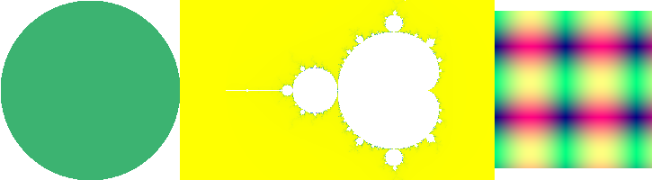The image/draw Package
Package image/draw defines only one operation:
drawing a source image onto a destination image, through an optional
mask image. This one operation is surprisingly versatile and can
perform a number of common image manipulation tasks elegantly and
efficiently.
func DrawMask(dst image.Image, r image.Rectangle,
src image.Image, sp image.Point,
mask image.Image, mp image.Point,
op Op)

A Relevant Example
Check out this gnarly gopher. (Or is that "gnawrly"?)
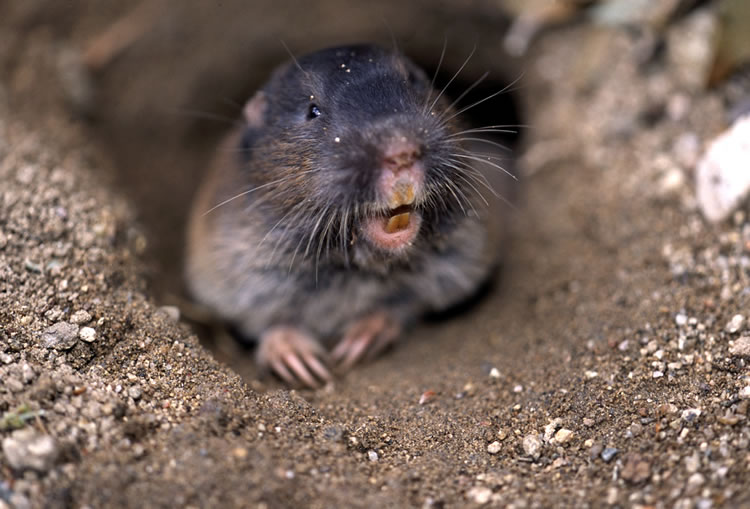A Gopher Chewing Holes in a Carpet
Let's copy that gopher into a PNG file, using the Sierpinski Carpet as a mask.
func makeSampleImage() (string, image.Image) {
gopher := loadGopher()
rect := gopher.Bounds()
carpet := SierpinskiCarpet{rect.Size(), image.Point{0, 200}}
// Copy the gopher into an RGBA image, using Sierpinski mask.
result := image.NewRGBA(rect)
draw.DrawMask(result, rect,
gopher, rect.Min,
carpet, image.ZP,
draw.Over)
return "mask.png", result
}
func loadGopher() image.Image {
inFilename := "gophers1.jpg"
inFile, err := os.Open(inFilename)
if err != nil { log.Fatal(err) }
defer inFile.Close()
log.Print("Reading image from: ", inFilename)
gopher, err := jpeg.Decode(inFile)
if err != nil { log.Fatal(err) }
return gopher
}
type SierpinskiCarpet struct {
Size image.Point
Offset image.Point
}
func (shape SierpinskiCarpet) Bounds() image.Rectangle {
return image.Rectangle{image.ZP, shape.Size}
}
func (shape SierpinskiCarpet) At(x, y int) color.Color {
x += shape.Offset.X
y += shape.Offset.Y
for ; x > 0 || y > 0; x, y = x/3, y/3 {
if x%3 == 1 && y%3 == 1 {
return color.RGBA{255, 255, 255, 255}
}
}
return color.RGBA{0,0,0,0};
}
mask.png
And here's the resulting image:
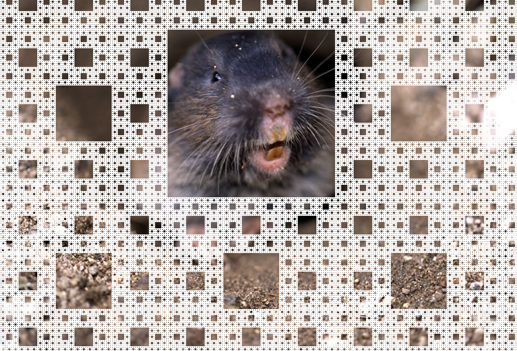Interfaces
All these examples of Image implementations are
interesting enough (or not, depending on your taste). But how
expensive is it to call methods through an interface,
when the concrete type is not known until runtime?
We'll need to cover some background first, but eventually we'll have an answer to this question.
An Acknowledgement
Before we go any further, I'd like to acknowledge my
indebtedness to Russ Cox and his excellent blog post on this
subject, available at
The post is five years old, so some details are likely to have changed.
A Sample Interface
It will be helpful to have a specific example as we discuss
interface implementation. So let's define the interface
Stringer…
type Stringer interface {
String() string
}
Interface Operations
func ToString(any interface{}) string {
if v, ok := any.(Stringer); ok {
return v.String()
}
switch v := any.(type) {
case int:
return strconv.Itoa(v)
case float:
return strconv.Ftoa(v, 'g', -1)
}
return "???"
}
This code uses interface values in three different ways:
- Call a method defined by the interface.
- Convert to another type (a type assertion).
- Get the concrete type.
So the implementation of interfaces must support (at least) these three use cases.
A Sample Implementation
Now, let's define a type that implements Stringer.
type Binary uint64
func (i Binary) String() string {
return strconv.FormatUint(i.Get(), 2)
}
func (i Binary) Get() uint64 {
return uint64(i)
}
A Binary Value
A value of type Binary is just a 64-bit integer
made up of two 32-bit words (we'll assume a 32-bit machine).
So, when we assign a value to var b Binary, the
situation looks like this:

That's pretty straightforward. But what happens when we
copy b into a variable of type Stringer?
A Stringer Value
An interface variable is a two-word pair, containing information about the concrete type and the actual value stored in the interface variable.
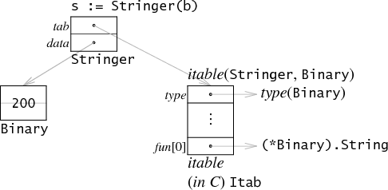
The info about the concrete type is a pointer to an
itable,
the first item of which is a pointer to the run-time
representation of type Binary; it also contains a
pointer to Binary's String() method.
The info about the actual data is a pointer to a heap-allocated
copy of the original Binary value.
The Cost of A Call
So, how expensive is a method call on an interface?
Actually, it's pretty cheap. It's about as expensive as a virtual function call in C++.
Further Reading
- Russ Cox: “Go Data Structures: Interfaces”
A discussion of the itable data structure. -
Rob Pike: “The
Laws of Reflection”
Explains type assertions, and how the reflection library yields information from an interface value's type/value pair. - Nigel Tao: “The Go image package”
- Nigel Tao: “The Go image/draw package”
Slideshow Setup
Special thanks to Hakim El Hattab, for the slideshow framework used to create this deck: “Reveal.js: HTML Presentations Made Easy.”
Themes
Reveal.js comes with a few themes built in:
Default -
Sky -
Beige -
Simple -
Serif -
Night
Moon -
Solarized
Transition Styles
You can select from different transitions, like:
Default -
None -
Fade -
Slide -
Concave -
Zoom